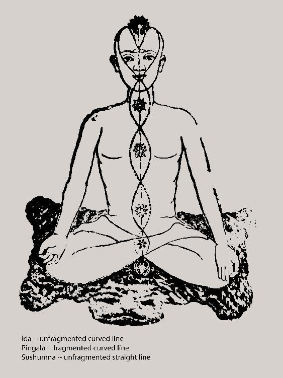
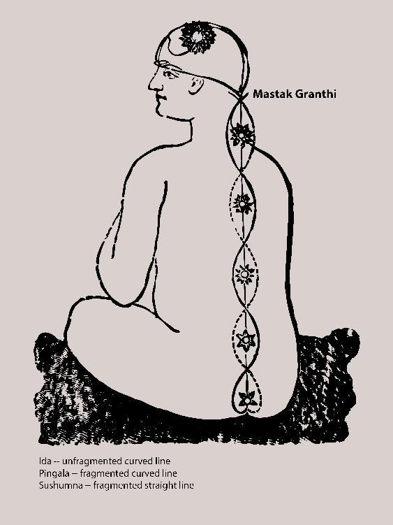

[Translators' note: All brackets - “[ ]” - and the text within them, unless specified otherwise, are by the translators, provided for the purposes of clarification.]
[Translators' note: All parentheses - “( )” - and the text within them are in the original in Bengali, unless otherwise noted.]
(5)
Practice of Sadhana
[or: Sadhana Method]
The “Introduction” will be concluded after saying a few things about yoga sadhana.
The Universe has come forth from the Self - “vishvatmavinirgataṃ” [the meaning is at the beginning of the sentence]. This is why the yogi does not worship any separate God, gods or goddesses other than the Self. He/she is devoted to the Self. His/her Supreme Realization is establishment in Atman [the Self], or abidance in Brahman [the Self Absolute]. The Substance that is the Original Cause of the Cosmos, the Source of all powers, That – whose nature is Omnipresence, and which is known as Consciousness [or: Spirit] within all beings – to unite the mind/heart in That Substance, which is One without a second, is the deepest desire of the yogi. This is because human beings want happiness. The spiritual seers have observed that: the contentment or happiness that one can get by uniting the mind to anything of the world is measured/limited. [That happiness] is little and temporary. Therefore it is harmful. But the Substance that is the Cause of all of these objects of the world – the Happiness that comes forth if mind is united with That, that [happiness] does not end. It is Infinite and Eternal. Therefore it is beneficial. It is for this reason that the yogi attentively practices uniting his mind to that Source of all powers, One without a second, Who Lives in his/her [the being's] very own body.
That Substance that is the Source of all powers, One without a second, is the “Paramatman” [Supreme Self]. Where That is in this body, and how it is that one can actually unite one's mind to That – all of this has been explained by the spiritual seer-yogis of great heights. They have observed that although That Substance is All-Pervading, It reveals Its True Form in the “brahmarandhra” [a special center] located in the head, and that the Pranava [Divine Sound] is Its Voice. In order to arrive at the brahmarandhra, one has to take up prana together with that Pranava, and raise the mind chakra by chakra within the spinal column, and then gradually bring it up to the point between the two eyebrows and make it still there. After that, by some supernatural power, without the help of prana, consciousness rises up to the top of the head and is able to enter the brahmarandhra. And upon reaching there, it becomes united with that Source of all powers and becomes saturated in the Ecstasy of the Infinite Bliss of Brahman. This is the State beyond death. Upon coming here, one no longer has to fall to the turbulence of life and death. In order to attain this State of Bliss, one has to practice “yama-niyama-asana-pranayam-pratyahar-dharana-dhyan-samadhi” or [what is known as] “ashtanga yoga” [eight-limbed path of yoga]. When this eight-limbed sadhana is mastered, then mind can be united to any place in the world of the twenty-four elements of Nature. From that all siddhis [phenomenal/supernatural powers] such as “anima” [becoming atomically small] and “laghima” [becoming lighter than the lightest] etc. are attained. Finally, through supreme vairagya [natural and complete detachment], renouncing all powers and experiences, and becoming free of even the State of the Bliss of Brahman, everything is extinguished in “Nirvana” [Total Emancipation]. The “knowledge-known-knower” - nothing whatsoever of that remains. Only That Which is the Origin remains. It is this that is called “Kaivalya” [Onlyness] or “Mukti” [Liberation]. This is a summarized explanation of yoga-shastra.
Being in the spinal column and the head – this is verily [literally] the “path of yoga.” How this pathway is and how it is structured – that is being written below in a summarized form. And in order to be able to understand, as well as make it easier to explain, a few illustrations are also provided alongside [the text].
The spinal column is hollow. The material that comprises the brain – that hollow is filled with that very material. There is a “chidrayukta” [holed; perforated] nadi [pathway of current] that goes from the area of the anus up to the brain in a straight path. It is known as “sushumna.” In that hollow, there are lotuses – one after another – made up of that same material. In the area of the anus, there is a four-petaled lotus. This is called “Muladhar.” Exactly in line with the root of the sexual organ, there is a six-petaled lotus. This is called “Svadhishtan.” In line with the navel is a ten-petaled lotus called “Manipur.” In the heart (meaning: exactly between the two breasts), in line with that area there is a twelve-petaled lotus named “Anahata.” In line with the root of the throat there is a sixteen-petaled lotus named “Vishuddha.” And exactly between the two eyebrows there is a two-petaled lotus called “Ajna.” All of these lotuses are also known as “chakra[s].” It is for this reason that these six lotuses are called “shatchakra” [six chakras]. Above all of these, in the brain, there is a thousand-petaled louts called “Sahasrar.” (See illustration no. 1.) The sushumna pierces through these seven lotuses, just like being strung together by a single thread piercing through the stems and going through the central parts of the seven lotuses. These seven lotuses are verily what are called the “saptaswarga” [seven heavens] or the “saptavyahrti-sthana” [abodes of the seven mystical utterances; alternate meaning: the seven mystical planes].

Illustration 1
An intrinsic aspect of any nadi is that the inside of it is empty, hollow – like a tube. It is the same with the sushumna [nadi]. Within the sushumna is a nadi named “vajra” which rises up from the Svadhisthan. And there is another nadi that rises from the Manipur known as “chitra,.” The space-filled basic opening/canal among these three nadis is called “brahmanadi.” Yogis have described the structure of this [brahmanadi] as “keshA grasya koteebhagaikabhagaṃ” [the space equivalent to one ten-millionth of a hair's breadth] – meaning: it is something that is extremely subtle and beyond the ordinary senses, apprehensible only by the buddhi [awareness].
Two nadis, named “ida” and “pingala,” rise from the left and right side – respectively – of the Muladhar, wrapping around each subsequent lotus on the way up; [the nadis] criss-cross each other and connect [separate and reconnect] with the sushumna at each of the junctions of the lotuses, and they continue upwards in this way until the Ajna. Above the Vishuddha, the junction at the place where the back of the neck and the skull connect is called “mastak granthi” [interjecting point of the head]. The way that the three nadis criss-cross and come together at the other junctions, the mastak granthi is also one of those junctions [where they come together]. From here, the sushumna enters the “pot” of the head [skull], whereas the ida and pingala go to the left and right sides – respectively – and meet again with the sushumna at the point between the two eyebrows. (See illustration no. 1.) Through these pathways, the ida connects to the left nostril, and the pingala
connects to the right nostril.
From the mastak granthi, the path of the sushumna becomes a bit distinctive. (See illustration no. 2.) From that junction, the sushumna divides into two branches. One branch goes through the head, under the brain, and, taking a slightly curved path and coming up near the middle of the eyebrows and facing a bit upward, pierces through the point of the Ajna, where it joins with the ida and pingala. After that, [the sushumna] comes towards the front a bit, and goes upwards through a subtle tunnel located in the forehead, going straight up to the middle of the forehead in the inner part of the head, where it goes through an extremely subtle opening that faces the inner part of the head, after which it enters the inner part where it “swings down” and, in a slightly curved way, again goes straight upwards and penetrates the Sahasrar in the brain and enters the brahmarandhra. The other branch goes upward from the mastak grantha, under the skull-cap, up to the top of the head (meaning: the spot where a crown's center would be placed, up to that point). From there it takes a slightly curved turn and enters the brahmarandhra. Inside the brahmarandhra, the mouth of this branch is closed. The mouth of the first branch [mentioned just before] is open. Thus, the canal of one branch does not connect with the other branch's canal. When yogis come to their time of death and leave the body by the power of yoga, through “thokkar” (or bumping) [English Edition Editor’s note: Please see expanded footnote on “thokkar” at end of Introduction] of the upward moving prana, the closed mouth of the sushumna in the brahmarandhra opens up and the canals of both branches unite, and the Parashakti Life merges – free of coverings – into the Supreme Consciousness/Spirit Brahman. This is what is called “the leaving of the life-force [or life] by piercing or cracking the brahmarandhra1. [During sadhana, the sadhak has to rise upwards from the Muladhar via the sushumna. [It may be thought] that that is why the description presented here is as if the sushumna is upward-directed. But that is not so. The sushumna is downward directed. It emerges from the “Mula” [a center in the head] and grows downwards and expands [in that direction]. The description of the emergence of the sushumna and its two branches is expounded upon in the section pertaining to the formation of the personal soul's physical body [later in this section 5 of the introduction], which contains those [nadis and branches] – in the item [no. 1 in that section] titled “Actions of Prana-currents.”]1

Illustration 2
[1 Translators' note: The bracketed - “[ ]” - section at the end of the above paragraph, starting with the word “During” and ending with “Prana-currents,” is in the original in its entirety in Bengali. The groups of internal brackets inside this section and the text within those internal brackets are by the translators, provided for the purposes of clarification.]
Wherever the three nadis connect while criss-crossing each other, there are three upward directed openings in all of those junctions. But because the sushumna nadi divides at the mastak granthi, there are four mouths in the upper part. One has to establish the mind at this four-mouthed junction at the mastak granthi. From there the manas [mental] perception has to be aimed straight to the middle of the two eyebrows, and the prana-current has to be directed to the middle of the two eyebrows through that lower branch of the sushumna.
“Kshetra” is actually the body. According to the proportionate actions of the gunas [in different parts of the body], the body is sectioned in three parts. (See Illustration no. 3.) The entire body endowed with the ten sense organs is one part; here there is the predominance of rajas-tamah [guna aggregate]. This is called “karmakshetra” [the field of action] or “kurukshetra.” From the Muladhar and such to the Ajna – the six chakras comprise another part; here there is the predominance of sattva-rajah. This is called “dharmakhestra-kurukshetra” [field of spirituality and field of the world]. And the “ten-fingered” distance from the Ajna to the Sahasrar is the third part; here there is the predominance of sattva-tamah. This is called “dharmakshetra” [field of spirituality]. This dharmakshetra is the plane of non-action. The second field – meaning: the six chakras – named dharmakshetra-kurukshetra – is verily the field where the battle of sadhana takes place. It is this “kshetra” [field] that is spoken about in the first sloka of the Gita.